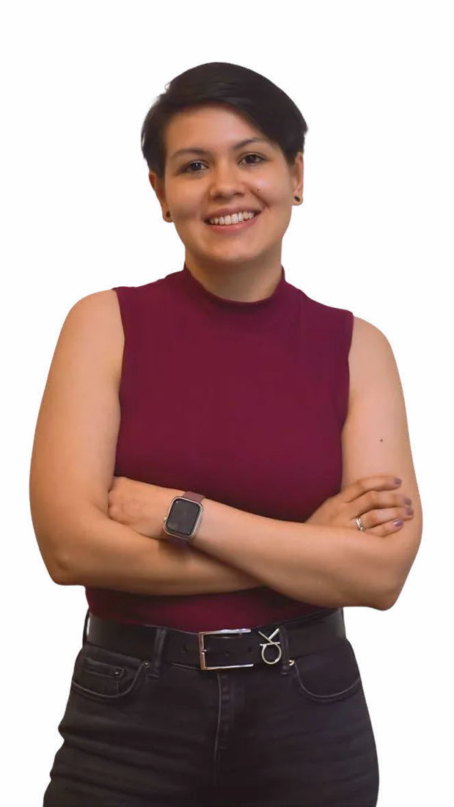

AlejandraRico
Graphic designer for visual identity, editorial and social content. Five years shaping public, institutional and political communication in Cali, Colombia. Now based in the Greater Toronto Area.
- Focus
- Identity, editorial, social, web
- Based in
- Vaughan, Ontario
- Contact
- aleja.9697@gmail.com
Selected work
10 projects in visual identity, editorial, social media and web, 2024 to 2026.



About
I am an advertising professional and graphic designer from Cali, Colombia. For five years I designed for public, institutional and political communication: books and newspapers, brand identities, social campaigns, video and print for the street.
That work taught me to turn complex information into design people actually read, to keep a visual system consistent across hundreds of pieces, and to make good decisions fast when deadlines are tight. I bring strategic thinking from advertising together with hands on design and video editing.
I am currently completing a Master of Arts in Digital Media and Global Communications at University of Niagara Falls Canada, and I am growing toward art direction.
Results
- 20,000+
- followers on the Secretariat of Economic Development account, up from about 2,000 during the Más Empleos Cali campaign
- 30,000+
- Instagram followers for a mayoral campaign, up from about 9,500
- 25,000+
- digital interactions with the Mandato Centro book, plus 100 printed copies
- 190+
- design assets delivered for Cali City Council
Experience
-
Graphic Designer
Cali City Council (Concejo de Cali), Cali, Colombia
- Delivered 190+ design assets across digital, editorial, print and event formats.
- Designed the Mandato Centro book and two accountability newspapers, about 2,000 copies distributed in downtown Cali.
- Created the visual identity for Al Centro Podcast and for the forum POT: Organizing the City, Protecting Life.
-
Graphic Designer and Advertising Coordinator
Secretariat of Economic Development, Cali City Hall, Cali, Colombia
- Led a five person creative team producing graphic and audiovisual content.
- Worked on the Más Empleos Cali campaign while the account grew from about 2,000 to 20,000+ followers.
- Contributed to Cali Ruge and to the Cali Film Commission website.
-
Graphic Designer
Campaign for the Cali Mayor’s Office, Cali, Colombia
- Built and applied the campaign visual identity across print, digital and video.
- Designed 300+ printed and promotional pieces: billboards, flyers, shirts, caps and flags.
- The candidate’s Instagram grew from about 9,500 to 30,000+ followers.
Education
- Master of Arts, Digital Media and Global CommunicationsUniversity of Niagara Falls Canada, In progress
- Specialization in Advertising Design for Digital ContentUniversidad Autónoma de Occidente, Cali
- Bachelor in Advertising CommunicationUniversidad Autónoma de Occidente, Cali
Tools
Adobe Illustrator, Adobe Photoshop, Adobe Premiere Pro, Adobe After Effects, Adobe Lightroom, Figma, CapCut, Canva, Microsoft Office
Languages
Spanish, native
English, professional working
What I do
- Visual identity
- Logos, color, type and the applications that make a brand recognizable on a hard hat, a menu or a billboard.
- Editorial design
- Books, newspapers and reports that turn institutional information into clear, readable stories.
- Social media
- Post systems and campaigns for public institutions, clinics, food brands and agencies.
- Video and motion
- Editing interviews, reels and campaign videos in Premiere Pro, After Effects and CapCut.
- Print and POP
- Event pieces, posters, merchandise and large format for the street.
- Web and UX
- Interface design for public service websites that simplify a process.